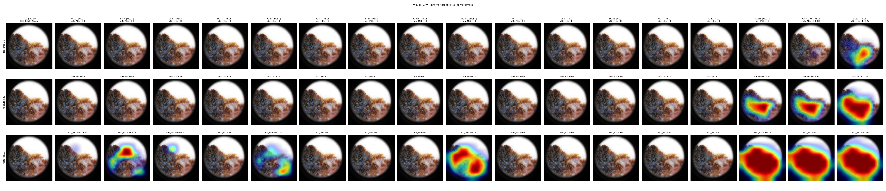
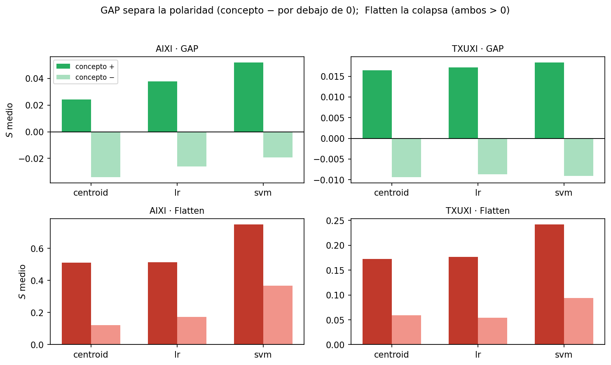

REAL-WORLD VALIDATION · V-MEDCAV
From Synthetic Shapes to a Real Melanoma Classifier
Every methodological lesson from the AIXI-Shape / TXUXI controlled benchmark is now turned on a clinically deployed model: the RECOD Inception-V4 melanoma classifier, probed with Visual-TCAV against a 17-concept dermoscopic vocabulary drawn from the seven-point checklist and PH². Here the ground truth is not a synthetic mask — it is a board-certified clinical reading.
17 derm7pt + PH² concepts
features.19 / .20 / .21 · per-concept absent pools
01
The model, the vocabulary, and the pool that makes it work
The classifier is a RECOD-trained Inception-V4 (Dropout(0.5) → Linear(1536, 3) head, checkpoint inception_v4_recod.pt) with class order MEL = 0, SK = 1, NEV = 2. Visual-TCAV concept maps and global scores are probed at the three terminal Inception-C blocks — features.19, features.20, features.21 — each an 8×8 spatial grid, with features.21 the bottleneck immediately before the classification head.
The concept vocabulary is the 17-concept dermoscopic set introduced by Lucieri et al., itself derived from the seven-point checklist (derm7pt, 14 concepts) and the structured PH² annotations (3 concepts). It spans three interpretive axes: morphological structures (pigment network, streaks, dots & globules, vascular structures, regression structures, pigmentation, blue-whitish veil), global symmetry (one- and two-axis asymmetry), and chromatic complexity (number of distinct colours). Each concept carries a documented clinical polarity with respect to melanoma (Mel⁺ = malignancy-indicative, Mel⁻ = benign/regular):
| Code | Concept | Source | Polarity |
|---|---|---|---|
PN_AT | Atypical pigment network | derm7pt | Mel+ |
PN_T | Typical pigment network | derm7pt | Mel− |
BWV | Blue-whitish veil | derm7pt | Mel+ |
ST_IR / ST_R | Streaks — irregular / regular | derm7pt | Mel+ / Mel− |
DG_IR / DG_R | Dots & globules — irregular / regular | derm7pt | Mel+ / Mel− |
VS_IR / VS_R | Vascular structures — irregular / regular | derm7pt | Mel+ / Mel− |
PIG_IR / PIG_R | Pigmentation — irregular / regular | derm7pt | Mel+ / Mel− |
RS_BA / RS_WA / RS_CO | Regression structures — blue areas / white areas / combinations | derm7pt | Mel+ |
ASYM / ASYM_2AX | Asymmetry / two-axis asymmetry | PH² | Mel+ |
COL3 | Three or more colours | PH² | Mel+ |
The single design decision that makes these attributions discriminative — rather than smeared across every concept — is the negative reference pool. Carrying forward the controlled-benchmark conclusion that matched-absent beats matched-blind and out-of-distribution pools, each of the 17 concepts here is contrasted not against a generic photo archive or a shared "any dermoscopic image" pool, but against same-source images in which that specific concept is documented as absent or typical/regular — e.g. PN_AT's negatives are derm7pt images whose pigment network is not atypical (pigment_network ∈ {absent, typical}); COL3's negatives are PH² images with COL3 == 0.
CAVs are built with the centroid method (difference of positive- and negative-pool activation centroids — Visual-TCAV's original construction), capped at 150 images per concept, with 50 integrated-gradients steps. The global test set is the ISIC-2019 strict-NV index, ≈ 51–53 images per class. tcav/visualtcav_pytorch.py was extended so the negative-pool argument can be a {concept: folder} dictionary — resolving and computing negative activations per concept — while a plain string keeps the original shared-pool behaviour byte-identical for backward compatibility.
where $p_k^c$ is the integrated-gradients-derived importance of feature map $k$ for concept $c$, projected through the CAV direction — yielding a spatial concept map directly comparable, channel by channel, across the seventeen concepts and three classes.
02
Three classes, one set of CAVs, three clinically coherent stories
With the per-concept absent pool in place, the global Visual-TCAV explainer — run once, with the same seventeen CAVs — reproduces the clinical structure of all three diagnostic classes simply by changing which logit it targets. That a single fixed set of concept directions realigns itself correctly under three different targets is the strongest evidence that the attributions track real model behaviour rather than pool artefacts.
malignant-vs-benign mean attribution ratio for MEL at the bottleneck features.21 — melanoma-indicative concepts dominate
the same ratio for NEV — a clean polarity inversion: benign "regular/typical" concepts now top the ranking, melanoma concepts collapse to ≈0
the ratio for SK — flat, low, no dominant concept: the expected signature of a vocabulary gap (the 17 concepts are melanoma/nevus-oriented)
MEL · top concepts at features.21
Top tier is uniformly Mel⁺ (regression, asymmetry, irregular structure, chromatic); the two Mel− concepts shown here (highlighted) anchor the bottom of the ranking — a 7.0× separation in mean attribution.
NEV · top concepts at features.21 — same CAVs, target retargeted
The top four are exactly the four benign "regular/typical" concepts, in order; every melanoma-indicative concept (highlighted) collapses near zero — ratio 0.03×, the cleanest single validation in the dataset.
SK · top concepts at features.21 — flat (vocabulary gap)
No bar stands apart — every value sits within a narrow 0.048–0.079 band, and Mel⁺/Mel⁻ concepts interleave with no separation. Flat is the correct, expected reading: the dictionary has no concept built for keratosis.
MEL — the melanoma vocabulary lights up
At features.21 the ranking is led by RS_CO (regression structures, combinations; mean 0.139, CI [0.108, 0.169]), RS_BA (regression, blue areas; 0.117), ASYM (0.113), ST_IR (irregular streaks; 0.109), COL3 (0.087), PN_AT (0.084) and ASYM_2AX (0.081), with VS_IR, DG_IR and BWV following. Every one of the top eight is melanoma-indicative; the five benign concepts (VS_R, RS_WA… down to PIG_R at 0.0003) sit at the bottom. mean(Mel⁺) = 0.080 vs. mean(Mel⁻) = 0.011 → 7.0×.
NEV — same CAVs, the polarity flips clean
Retarget the identical seventeen CAVs at the nevus logit and the top four become, in order, DG_R (regular dots & globules; 0.154), ST_R (regular streaks; 0.092), PIG_R (regular pigmentation; 0.059) and PN_T (typical pigment network; 0.021) — exactly the four benign "regular/typical" concepts — while every melanoma-indicative concept collapses below 0.01. mean(Mel⁺) = 0.002 vs. mean(Mel⁻) = 0.065 → 0.03×. Nothing changed except which class index the explainer targets; the ranking inverted on cue.
SK — the expected non-result: a vocabulary gap
For seborrheic keratosis no concept dominates: COL3 (0.079), BWV (0.078), VS_IR (0.064), ASYM_2AX (0.061) and ASYM (0.060) sit close together, total attribution mass is 0.58 versus MEL's 1.01, and the Mel⁺/Mel⁻ ratio is a muted 1.8×. This is not a failure of the method — it is the signature of a 17-concept dictionary that was built for melanoma and nevus and simply has no dedicated descriptor for keratosis.
Signal concentrates at the bottleneck
Total attribution mass per class peaks at features.21 for MEL (0.659 → 0.256 → 1.013 across .19/.20/.21) and SK (0.190 → 0.271 → 0.584); NEV is more spread (0.243 → 0.409 → 0.351) but its bottleneck ranking is the cleanest of the three. The mass ordering MEL > SK > NEV at features.21 traces, almost directly, how well the fixed concept dictionary covers each diagnostic class — a quantitative readout of vocabulary coverage that falls straight out of the attribution statistics, with no extra instrumentation.
03
One image, seventeen concepts, a sharp local explanation
ISIC_0056726.jpg — true label MEL, predicted MEL with logit 8.99 against SK −4.71 and NEV −6.73 — is explained locally at features.21. Because the local explainer targets the predicted class, the SK and NEV attribution columns are identically zero by construction; only the MEL column carries signal.
Local concept-map grid — all 17 concepts × features.19/20/21 (MEL column, ISIC_0056726)

The genuine export behind the ranking below: one row per terminal layer (features.19 → features.21, top to bottom) and one column per concept, each cell showing that concept's spatial attribution map for the predicted MEL class. Reading along the bottleneck row, the melanoma-vocabulary concepts (RS_CO, ASYM, COL3, RS_BA, VS_IR, ST_IR …) light up over the lesion's pale regression areas, irregular border and chromatic zones, while the benign "regular/typical" concepts (PN_T, ST_R, DG_R, PIG_R, PIG_IR) render as flat, near-zero maps — the local, single-image mirror of the global MEL/NEV polarity inversion described above.
Full local ranking at features.21 (MEL column): RS_CO 0.314 · ASYM 0.271 · ASYM_2AX 0.240 · COL3 0.232 · RS_BA 0.212 · VS_IR 0.205 · ST_IR 0.192 · PN_AT 0.190 · BWV 0.130 · DG_IR 0.127 · RS_WA 0.101 · VS_R 0.084 — then PN_T / ST_R / DG_R / PIG_R / PIG_IR = 0.000. Sharp, concentrated, and dermatologically legible: regression, asymmetry and chromatic complexity dominate; every benign descriptor is silent.
04
A second, independent method says the same thing
The Visual-TCAV global rankings above were corroborated against a methodologically distinct pipeline — standard Captum-based Kim-2018 TCAV, run on the same RECOD Inception-V4, the same 17 concepts, the same three layers and the same three targets, but with a different CAV pool design (a shared label-blind pool, scored by sign-count of the directional derivative, rather than per-concept absent pools scored by spatial mean attribution). Across all 153 (class × layer × concept) cells, with no significance filtering, the two methods' scores correlate at Pearson 0.49 / Spearman 0.50, rising to 0.68 for MEL and 0.63 for NEV at the decision bottleneck features.21 — exactly where the class is read out. Within-context rank agreement (mean per-class-per-layer Spearman over 9 groups) is ρ ≈ 0.54, and a binarised "does this concept push the target logit up" test agrees 65% of the time (100/153 cells).
Standard-TCAV polarity at the bottleneck — mean sign-count per concept, by class
![Three horizontal bar panels (Melanoma, Melanocytic nevus, Seborrheic keratosis) showing each of the 17 concepts' mean TCAV sign-count against a dashed chance line at 0.5, bars coloured red for melanoma-indicative concepts and blue for benign concepts; in the Melanoma panel red bars cluster near 1.0 and blue bars near 0, in the Nevus panel the pattern reverses (blue bars near 1.0, red bars near 0), and in the Seborrheic-keratosis panel both colours sit close together around 0.5–0.7 with no separation](assets/vmedcav_tcav_signcount_polarity_by_class.png)
The independently-built standard-TCAV pipeline reproduces the same three-class signature from a completely different functional (sign-count of the directional derivative against a shared label-blind pool, instead of spatial mean attribution against per-concept absent pools): clean polarity separation for MEL, a clean inversion for NEV, and an undifferentiated, chance-hugging spread for SK.
Pooled cross-method agreement — Visual-TCAV vs. standard TCAV (n = 153 cells)

The genuine scatter behind the headline figure: 153 points, one per (class, layer, concept) cell, with a positive least-squares trend and the annotated Pearson r = 0.49 / Spearman ρ = 0.50 — a moderate, non-trivial pooled correlation between two pipelines that share nothing but the model, the concepts and the layers.
Visual-TCAV ↔ standard-TCAV agreement (Pearson r), by class × layer
For MEL and NEV, agreement between the two independently-built pipelines rises monotonically toward the bottleneck — the layer where the class decision is actually read out — peaking at 0.68 and 0.63. SK is the exception: agreement falls toward the bottleneck (0.76 → 0.34, highlighted), the layer-resolved signature of the same vocabulary-gap finding the bar charts above already showed from a different angle.
| Class | Visual-TCAV top-5 (f.21) | Standard TCAV top-5 (f.21) | Overlap |
|---|---|---|---|
| MEL | RS_CO, RS_BA, ASYM, ST_IR, COL3 | RS_CO, RS_BA, ASYM_2AX, ASYM, VS_R | 3/5 |
| SK | COL3, BWV, VS_IR, ASYM_2AX, ASYM | ASYM_2AX, RS_WA, COL3, ASYM, VS_R | 3/5 |
| NEV | DG_R, ST_R, PIG_R, PN_T, RS_BA | PIG_R, DG_R, PN_T, PN_AT, ST_IR | 3/5 |
The overlapping concepts in every row are exactly the clinically correct families — MEL: regression + asymmetry; NEV: benign regular/typical; SK: PH² chromatic/asymmetry. Two pipelines, built independently, scored on different functionals, with different negative-pool philosophies, recover the same per-class concept structure. That is convergent validity in the textbook sense: the moderate correlation (0.3–0.68, not near 1.0) is itself the right signature — it says the two methods agree on coarse concept-family structure (the part that reflects the model) while disagreeing on fine-grained ranking (the part that reflects each method's own measurement choices). NEV is the cleanest cross-method corroboration — both methods independently push DG_R, PIG_R and PN_T to the top and every melanoma concept to the bottom, the same polarity inversion recovered twice. SK shows the weakest agreement, consistent with it being the vocabulary-gap class where neither method has a strong, layer-stable signal to agree on.
Standard-TCAV polarity correctness, by CAV method × negative pool × layer
![Heatmap titled 'Polarity correctness per (cav_method, neg_source, layer)', rows are six combinations of CAV method (centroid, lr, svm) and negative-pool source (derm7pt_random, isic_random), columns are features.19/20/21, cells coloured on a green-to-red scale labelled 'polarity accuracy (sign_count vs label)' and annotated with values; the centroid/derm7pt_random row reads 0.94, 0.65, 0.94, every other cell in the grid is between 0.65 and 0.94, and no cell is coloured red or falls below roughly 0.65](assets/vmedcav_tcav_polarity_correctness_heatmap.png)
A robustness check run before settling on the corroborating pipeline's exact configuration: across every combination of CAV-construction method (centroid, logistic-regression, SVM), negative-pool source (derm7pt vs. ISIC random) and probed layer, sign-count polarity correctness stays in a 0.65–0.94 band — comfortably above the 0.5 chance line everywhere, with centroid + derm7pt_random reaching the top of that band (0.94 at features.19 and features.21). That cell is the headline configuration used for the cross-method comparison above.
05
Conclusion & what carries forward
V-MedCAV closes the loop the AIXI-Shape / TXUXI controlled benchmark opened. Every methodological choice that the synthetic experiments identified as load-bearing — a CAV classifier validated above chance, a negative pool matched to the concept's own absence rather than to a generic "not this" notion, the penultimate-layer sweet spot, GAP-space CAV construction, and a contrastive (CSS-style) reading of signed attributions rather than raw absolute magnitude — reappears here as the difference between an explainer that smears attribution across all seventeen concepts and one that reproduces, cleanly and reproducibly, the dermatological literature's own account of what each diagnosis looks like.
Why GAP-space: polarity separation under GAP vs. flattened activations (AIXI / TXUXI)

The AIXI / TXUXI evidence behind the "GAP-space CAV construction" choice that V-MedCAV inherits: pooling activations to a global-average-pooled vector before building the CAV produces a clean positive/negative split between matching and anti-concepts (top row, every method, both datasets), while flattening the same activations collapses both groups onto the positive side with no separation (bottom row) — a property of the representation, not of any one CAV method, that would silently wash out exactly the polarity-inversion signal the dermatological explainer above depends on.
The headline results are threefold and mutually reinforcing: (1) for MEL, the melanoma-indicative concept families dominate the benign ones by 7.0× at the bottleneck; (2) retargeting the identical CAVs at NEV inverts that ranking cleanly (0.03×) — the strongest single piece of evidence that the attributions track the model's decision boundary rather than an artefact of the pool; and (3) SK's flat, low attribution profile is correctly diagnosed as a vocabulary-coverage gap rather than misreported as a finding. A second, independently-built TCAV pipeline corroborates all three stories at the per-class concept-family level (pooled ρ ≈ 0.50, rising to 0.68 at the decision layer for MEL).
What remains open mirrors the gaps the controlled benchmark already flagged: a 17-concept dictionary that does not cover every diagnostic class (SK), the absence of a formal null-distribution significance test for "is concept X used by class Y" claims, and the question of whether a richer, SK-aware concept vocabulary would close the vocabulary gap or simply relocate it. Those are the natural next steps for turning this explainer from a research instrument into a clinical audit tool.
EXPLORE THE FULL STUDY
Review the complete research
The full study runs from the survey of concept-based explainability, through the controlled AIXI-Shape / TXUXI validation where every methodological choice was stress-tested against ground truth, to this real clinical deployment on the RECOD Inception-V4 melanoma classifier.